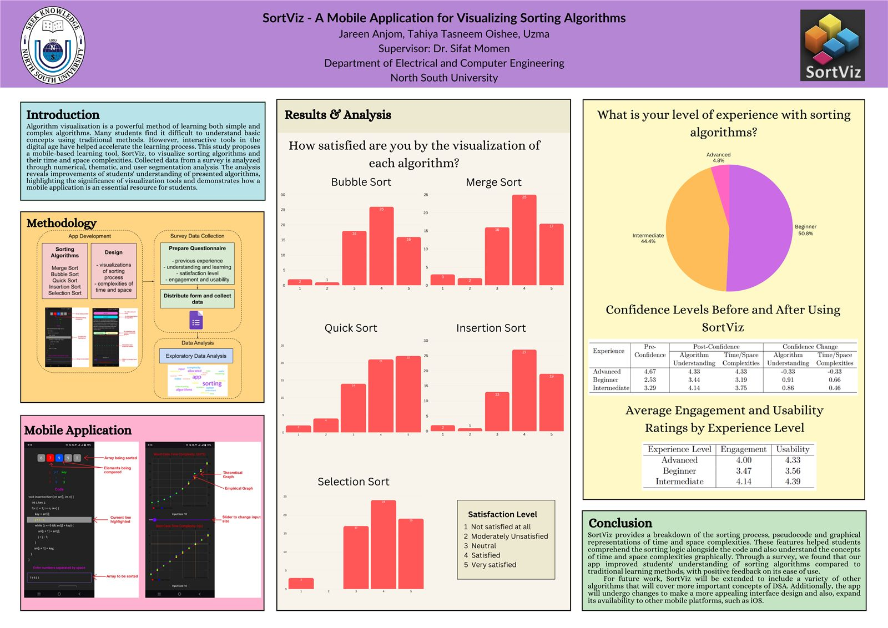

About Me
I am an AI Specialist at Fidelity Technologies and a Research Assistant at Kuwait University. Working across industry and academia lets me explore new ideas and build tools that people can actually use.
My research centers on efficient, deployable intelligence: deep learning for healthcare, wearable and assistive technologies, and models designed for resource-constrained edge devices. I enjoy working on problems where AI can make everyday systems more useful and accessible.
I received my B.Sc. in Computer Science and Engineering from North South University, Bangladesh, graduating Summa Cum Laude and ranking among the top 5% of my graduating class. Since then, I have contributed to peer-reviewed publications and enjoyed working with people from different backgrounds on a range of research projects.
I am currently seeking research opportunities where I can work on meaningful problems, learn from others, and continue growing as a researcher. Curriculum Vitae
What's New
- Jun 2026 Appointed RA at Kuwait University for a new project: "Modeling Ultrasound Waves using Physics-Informed ResNet Approximators" (Grant ZF01/25)
- Mar 2026 Tasleeh Core is LIVE: tasleeh.com
- Jan 2026 Q1 Publication now online: "SatNet-B3: A Lightweight Deep Edge Intelligence Framework for Satellite Imagery Classification" in Future Internet, doi: 10.3390/fi17120579
- Nov 2025 KICLS'25: Presentation of "Pulse of the Campus: Real-Time Health Tracking with Bangle.js2"
Research Background
Deep Learning for Healthcare
Leveraging deep learning models for medical and physiological data analysis, with direct applications in disease detection, health risk prediction, and continuous monitoring systems. This includes work on respiratory disease detection from spectrograms (sequential cough sounds) and heat stress prediction in real-time wearable systems, enabling early intervention and personalized healthcare solutions.
Edge Intelligence
Developing lightweight, high-performance neural networks that can be deployed on resource-constrained edge devices. My research explores model optimization techniques—including quantization, pruning, and knowledge distillation—to enable efficient inference on mobile and embedded systems without sacrificing accuracy. This is critical for deploying AI solutions in practical, real-world environments.
Computer Vision for Assistive Technologies
Designing real-time perception systems that include object detection, semantic segmentation, and depth estimation to enhance mobility and navigation for visually impaired users. On-device models on smartphones were developed that provide tactile and auditory feedback for safer footpath navigation and enhanced environmental awareness on Bangladeshi roads and similar contexts.
Experience
Industry
- Develop and maintain on-premise AI assistants using lightweight LLMs, HuggingFace models, Ollama, Retrieval-Augmented Generation (RAG), and intelligent agent frameworks.
- Integrate AI solutions into enterprise workflows and content management systems.
- Design predictive machine learning solutions and automation pipelines for business applications.
Research
Conducting research in machine learning, healthcare AI, wearable sensing, and scientific machine learning under multiple funded research initiatives.
- Develop machine learning models for real-time heat stress prediction using physiological and environmental data collected from Bangle.js 2 wearable devices.
- Investigate the relationship between environmental conditions, physiological responses, and heat-related risks in hot-arid climates.
- Conduct literature reviews and contribute to manuscript preparation for journal and conference publications.
- An initial abstract based on this work was presented at the Kuwait International Conference on Life Sciences (KICLS 2025).
Grant: ZF01/25 June 2026 – Present
- Develop Physics-Informed Neural Networks (PINNs) and ResNet-based surrogate models for ultrasound wave propagation governed by partial differential equations (PDEs).
- Benchmark deep learning approximators against traditional Finite Difference Method (FDM) simulations.
- Extend modeling approaches toward realistic skull-image domains for biomedical ultrasound applications.
- Develop reproducible machine learning workflows using Python, PyTorch, TensorFlow, version control systems, and containerized environments.
- Assist in experiment design, result analysis, visualization, and scientific publication preparation.
Grant: CTRG-23-SEPS-29
- Conducted research in computer vision and deep edge intelligence.
- Designed, trained, and optimized deep learning models for deployment on resource-constrained devices.
- Contributed to research projects in healthcare AI, assistive technologies, satellite imagery analysis, and computer vision applications.
- Participated in manuscript preparation and publication of peer-reviewed research articles.
Teaching
- CSE311: Database Management Systems
- Assisted in teaching SQL and database management concepts.
- Evaluated assignments, projects, and laboratory work.
- Conducted tutorial sessions and provided academic support to undergraduate students.
Publications
Journal Articles
Conference Proceedings
-
ConferenceDiabetic Retinopathy Detection Using a Lightweight Edge Intelligence-based Technique2024 IEEE International Conference on Biomedical Engineering, Computer and Information Technology for Health (BECITHCON 2024), November 2024
Thesis
-

ThesisVisualization of Sorting Algorithms on a Mobile Application — A Study on Traditional vs Interactive Digital ToolsCSE499 Capstone Project, North South University, Bangladesh, December 2024
Peer Review
Journals I have reviewed for:
Industry
Will be updated soon...
Contact
Feel free to reach out to me for research collaborations, academic discussions, or any other related purpose. Please use a work address if your enquiry relates to the corresponding company or institution.
Personal
jareenanjom02[at]gmail.com
Work
- jareen.anjom[at]fidelity-technologies.com
- jareen.anjom[at]guest.ku.edu.kw